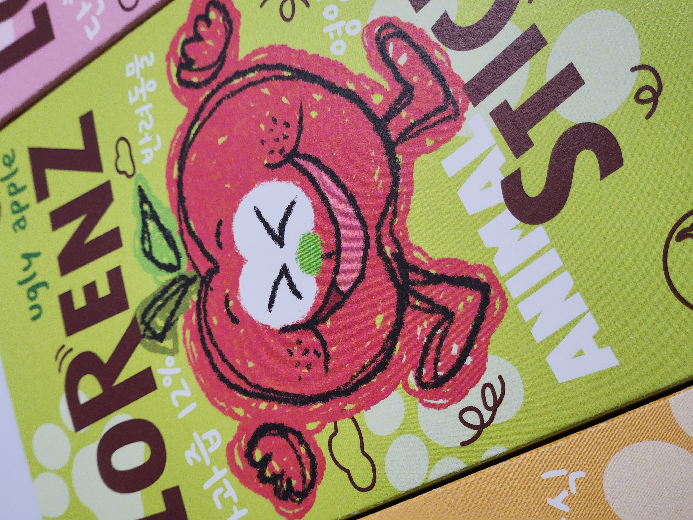
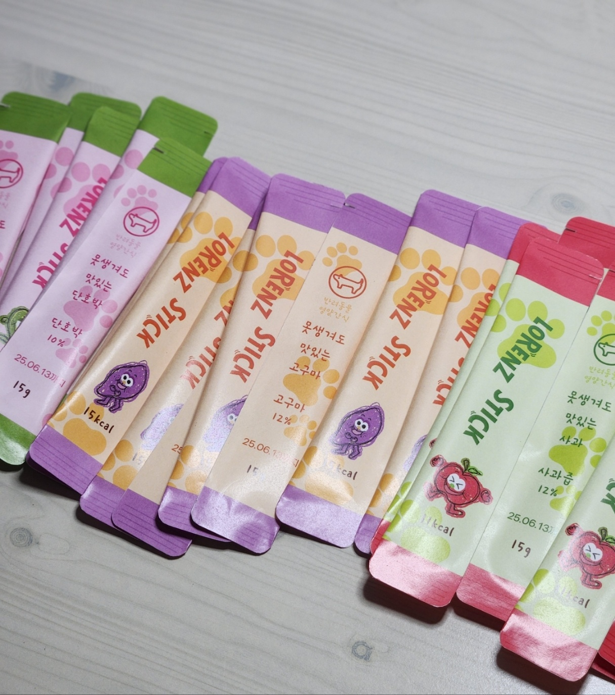
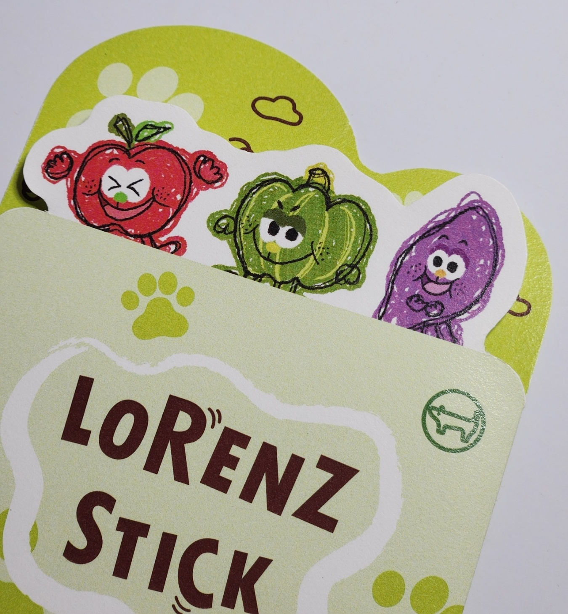
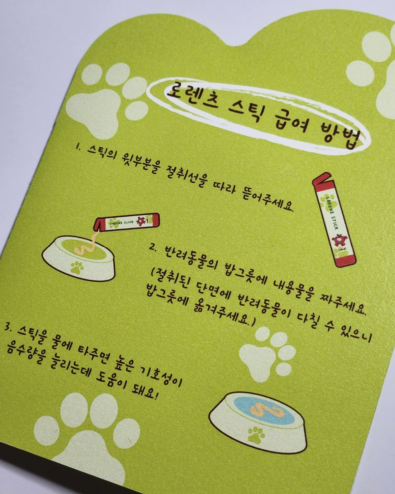

package design
redesign
2024.06.18
몽블랑 160g, 몽블랑 240g, 노루지 80g
제품: 로렌츠 스틱
반려동물 간식 브랜드인 '로렌츠'의 제품 '로렌츠 스틱'을 리디자인 해보았다. 못난이 캐릭터를 넣어서 못난이 농산물을 활용한 제품의 특성을 살리고, 패키지 전반에 생동감을 주어 긍정적인 느낌을 주고자 했다.






